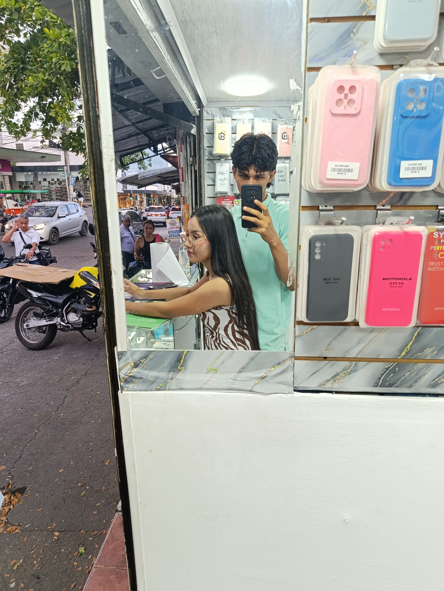
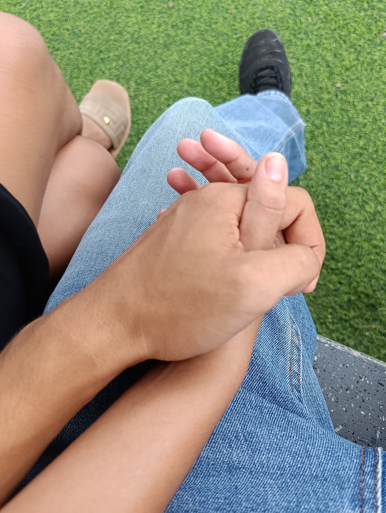
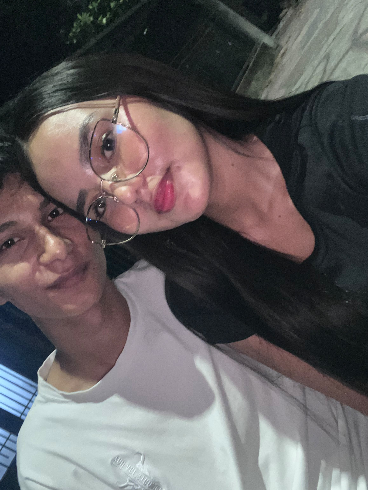
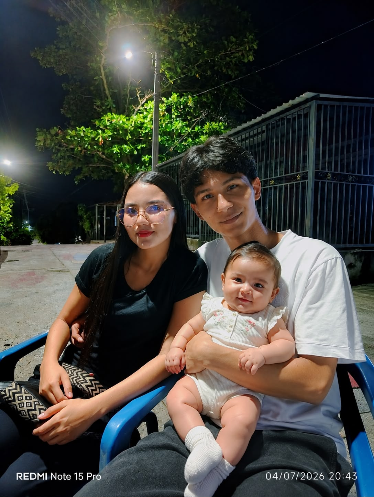
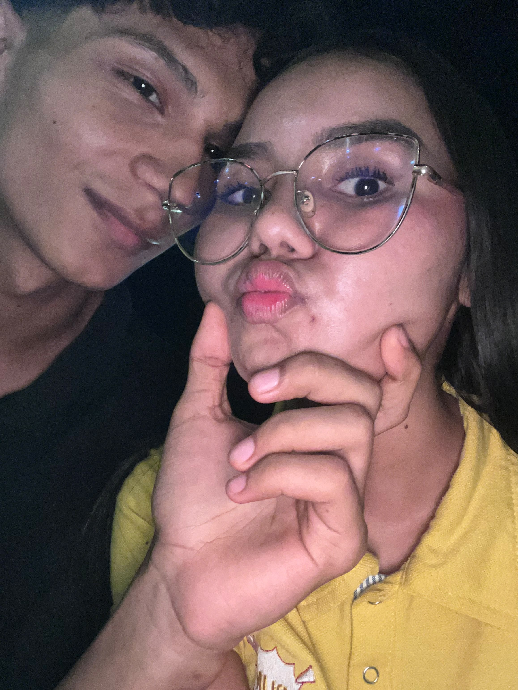

Un álbum para dos
Momentos
Memorables
Seis instantes que quiero guardar para siempre.

Tus visitas a mariaP fueron las mejores, me alegraste varios dias en esa soledad.

poder vernos un rato en el parque y quedarnos hablando de cualquier cosa es lo mejor, esa sensación no la cambio por nada. por cierto, no me asustaste cuando llegaste por la espalda JAJAJ.

En el cumpleaños de mi hermano me di cuenta de lo tanto que me estabas llegando a querer, el solo aceptar estar ahi con parte de mi familia fue muy valiente de tu parte. Ese dia la pase muy bien contigo y no importo que te tuviera que llegar tan rapido a tu casa.

JAJAJA esta imagen la amo, no sabes cuanto sueño con lograr tener una niña asi de hermosa como tú.
Momentos antes de la tragedia, ese dia no comiste nada y senti que solo la pase bien yo, pero aunque fuera asi me hiciste sentir un buen rato, tambien cuando estabamos acostados en la mesedora y pude por primera vez cargarte y sentir el peso de la mujer de mis sueños.

Esta foto nunca te gustó, pero yo la guardo como un recuerdo preciado y nunca olvidare todo lo que hemos pasado en tan poco tiempo. En estos meses de conocerte me pasaron más cosas lindas a tu lado que tal vez en toda mi vida.